The Triton software package was developed using MATLAB, a
hi-level programming language. MATLAB (www.mathworks.com)
must be installed on the current computer for Triton to function. MATLAB is
available for many operating systems including Windows, Mac and Linux. However,
Triton was developed using Windows XP sp2 and MATLAB 7.0 (Release 14) and has
not been extensively tested with other operating systems or versions/releases
of MATLAB.
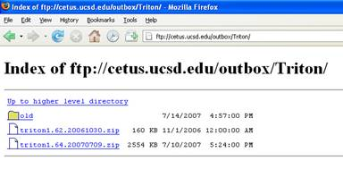
- Uncompress the zipped file in
an empty folder or directory, such as D:\Triton
- Set MATLAB’s path to include the directory where Triton
was uncompressed by using the MATLAB File pull-down and ‘Set Path…’
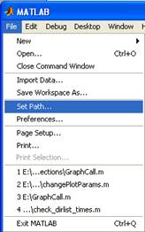
- Click the ‘Add Folder…’ button, browse and select the
folder containing the version of Triton that you want to run, Remove other
versions of Triton from the path with the ‘Remove’ button. Click ‘Save’
and then ‘Close’.
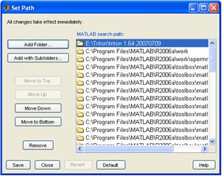
- Start Matlab and at the command prompt (>>) type
“triton” to run the application.
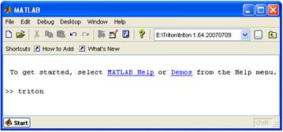
Three
windows will be displayed: Plot, Control, and Message.
- Plot Window (Right) - Displays Long Term Spectral Average
(LTSA), spectrogram, spectra and time series plots.
- Message Window (Lower Left) - Keeps a record of the
users actions and displays Plot Window cursor location along with ‘pick’ data.
- Control Window (Upper Left) – Control settings for
Plot Window.
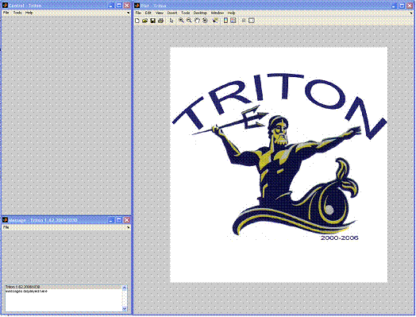
- Use the Control Window File pull-down menu to open a WAV
file.
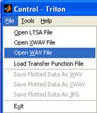
- In the Triton software directory, select humpback.wav and
click Open.
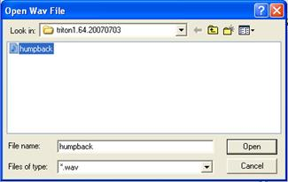
- Click OK or set the start time of the WAV file. The WAV
file will then be opened up as a time series in the Plot Window.
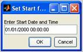
- The plot settings can be changed within the blue section
in the Control Window. Set the Plot Length to 20 seconds to view the
whole file.
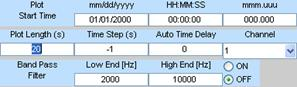
Select the Spectrogram button at
the top of the Control Window to display the WAV file data also as a
time-frequency plot.
- Adjust some of the spectrogram plot parameters and listen
to the WAV file sound.
-
Set Plot Frequency End to 2000
-
Set FFT Length to 3000
-
Set Brightness to -5
If your computer has sound playing
capabilities, play the sound by pressing the button at the bottom right of the
Control Window.
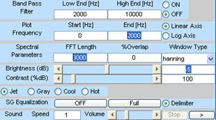
Based on above changes, the Plot
Window should look like the following:
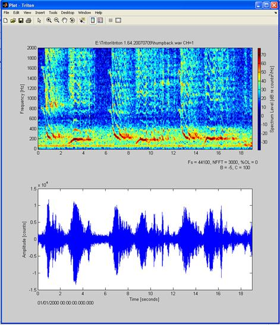